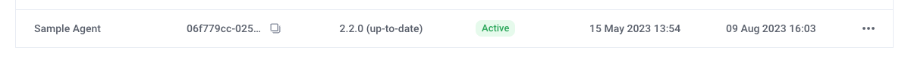

Installation
Be sure to complete the prerequisites from Requirements before proceeding.
Particularly, make sure you have your data access credentials (e.g., IAM Role ARN for AWS EKS + S3) ready before going through the Agent Setup below.
Agent Setup
Robust Intelligence provides a self-guided installation process through the web client, which will automatically generate a pre-filled Helm values file for your agent based on your cloud configuration.
To begin, sign in to your Administrator account, navigate to the Organization Settings page, and click on the Manage Agent Setup tab.
From there, clicking on the Create Agent button will launch a modal that walks you through the self-guided installation.

Select a unique name to identify your agent, and input the data access credentials generated during the Requirements phase.
Upon completing the setup, you will receive the following:
A pre-filled
*_values.yamlfile for therime-agentHelm chartHelm commands to install the chart
Helm Installation
Point your local
kubectlto your data plane K8s cluster and namespace.Execute the provided Helm commands to install the agent in your K8s cluster. They will look like this:
helm repo add robustintelligence https://robustintelligence.github.io/helm --force-update helm upgrade -i rime-agent robustintelligence/rime-agent \ --version $RI_VERSION \ --values $PATH_TO_VALUES_FILE
Validation
After performing the Helm installation, use the following reference to should smoke test your agent installation.
Infrastructure
Point your local
kubectlto your data plane K8s cluster and namespace.Inspect the Deployments. All containers should be ready.
> kubectl get deployments NAME READY UP-TO-DATE AVAILABLE AGE rime-agent-launcher 1/1 1 1 5m26s rime-agent-operator-controller-manager 1/1 1 1 5m26s rime-agent-rime-cross-plane-server 1/1 1 1 5m26s
Web Client
The status of the agent is regularly updated on the Agents Setup page of Organization Settings (as well as the Agent Status page of Workspace Settings).
Verify that the new agent has a status of
Activein the web client.Make note of the new agent’s ID, as you will need to reference it for the other steps.
Connect the agent to at least one Workspace via the Workspace Agent Configuration steps.
Python SDK and REST API
The following commands should each return a list of the agents currently assigned to your Workspace. Be sure to use an API Token from a Workspace that you connected to the new agent.
Verify that the outputs of the commands contain a uuid matching that of the newly-deployed agent.
- Python SDK
from rime_sdk import Client rime_client = Client("rime.<DOMAIN>.com", "<API_TOKEN>") [print(x) for x in rime_client.list_agents()]
{'agent_id': {'uuid': ... }
- REST API
curl -X GET 'rime.$DOMAIN.com/v1/agents' \ --header "rime-api-key: $API_TOKEN" \ --header "Content-Type: application/json"
{"agents":[{"agentId":{"uuid:": ... }%
Monitoring Setup (optional)
You may optionally install the rime-extras helm chart which provides system/application monitoring via the Datadog Agent and Prometheus Node Exporter.
Helm Installation
Point your local
kubectlto your data plane K8s cluster and namespace.Create a
values.yamlfile enabling the Datadog Agent and Prometheus Node Exporter:rimeExtras: # -- Whether to install the DataDog Agent datadog: true # -- Whether to install the Prometheus Node Exporter prometheusNodeExporter: true
Execute the below Helm commands to install the chart in your K8s cluster:
helm repo add robustintelligence https://robustintelligence.github.io/helm --force-update helm upgrade -i rime-extras robustintelligence/rime-extras \ --values $PATH_TO_VALUES_FILE